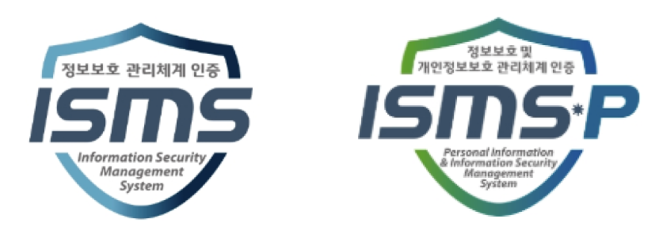

정보보호,우리의 핵심가치이자
고객과의 약속입니다.
고객의 신뢰를 지키는 정보보호

SK텔레콤은 고객안심을 최우선에 두고,책임있고 투명한 실행을 통해 고객과 사회가 신뢰할 수 있는 정보보호 체계를 만들어갑니다.
정보보호 거버넌스
기준은 엄격하게
보호는 철저하게
SK텔레콤은 의사결정 ‧ 정책 ‧ 투자 ‧ 대응하는문화 ‧ 검증의 다섯 축으로 정보보호 거버넌스를 재정립하고, 변화하는 위협 환경에 대응할 수 있는 하나의 통합 운영체계로 작동시키고 있습니다.
- 의사 결정CEO 직속 CISO ‧ CPO
- 정책‧표준글로벌 표준 기반 정보보호 정책 체계
- 자원‧투자지속적인 투자
- 사람‧문화전 임직원 보안 실천
- 검증‧인증외부 검증‧인증

SK텔레콤은 전사 관점의 위험 관리를 위해 CEO 직속의 CISO 및 CPO 체계를 구축하고, 경영진과 이사회에 직접 보고하는 투명한 거버넌스를 확립했습니다.
CISO (정보보호‧기술적 보호)와 CPO(개인정보보호 정책‧컴플라이언스)는 각 영역에 전담하는 동시에, 서비스 기획부터 운영‧침해 대응에 이르기까지 전 과정을 함께 검증하며 긴밀하게 협력하고 있습니다.
모든 임직원이 같은 기준으로 보안 활동을 수행하기 위해 명확한 정책과 절차가 필요합니다. SK텔레콤은 국제 정보보호 표준(ISO/IEC 27002)을 바탕으로 보안 정책을 재정비하여, 실행 - 검증 - 개선의 선순환 구조로 운영합니다.
사이버 위협이 정교해지고 서비스 환경이 빠르게 변화할수록 정보보호 역량에 대한 지속적인 투자는 필수적입니다. SK텔레콤은 5년간 약 7,000억 원 규모의 재원을 집중 투자하여 보안 아키텍처 강화, 실시간 운영·대응 역량 확보, 철저한 고객 보호를 실현해 나갑니다.
OUR SECURITY CULTURE
가장 강력한 보안은 기술을 넘어선 '사람'에게서 시작됩니다. SK텔레콤은 일상의 모든 업무 환경에 'Security & Privacy First' 가치를 깊이 심어갑니다.
기획 단계의 'Privacy by Design'부터 업무 전반의 '6대 보안 실천 지침' 준수, 그리고 실전 같은 모의훈련까지—우리는 타협 없는 최우선 보안 원칙을 일상에서 실천하고 있습니다.
정보보호 아키텍쳐
글로벌 표준 프레임 워크 기반의
제로 트러스트 보안 원칙 적용
‘그 어떤 사용자나 시스템도 신뢰하지 않고 매 순간 검증한다’는 제로 트러스트(Zero Trust) 원칙을 기반으로,
'식별 - 보호 - 탐지 - 대응 - 복구'의 5단계가 하나의 흐름으로 작동하는 SK텔레콤의 보안 아키텍처를 정의합니다.
서버 및 SW 보안 가시성 확보
보호 대상의 가시성 확보가 보안의 출발점입니다.
통신 서비스는 네트워크 ‧ 시스템 ‧ 데이터 ‧ 고객 접점이 복합적으로 연결되어 있어, 보호 대상의 정확한 식별이 보안의 출발점입니다.
SK텔레콤은 자산 식별과 위험평가 프로세스를 운영하고 이를 뒷받침할 자동화 기반의 자산관리 시스템을 단계적으로 구축하고 있으며,
공급망 보안관리를 통해 외부 요인으로 인한 보안 위험을 줄이고 있습니다.
변화하는 자산의 지속적 가시성 확보
자동화 기반 자산관리 시스템 도입
식별/위험도 평가/ 개선조치 연계
공급망 보안 관리
공급업체 보안역량 평가
소프트웨어 구성요소 취약점 관리 체계 강화
변화하는 위협보다 한발 앞서가겠습니다.
보안기술은 단순한 도입을 넘어, 변화하는 위협에 신속하게 대응하기 위해 지속적으로 내재화·고도화되어야 합니다.
SK텔레콤은 인증 보안과 AI 기반 AX 위협 대응 기술을 강화하여 고객 보호 중심의 보안 체계를 발전시키고 있습니다.
PASSWORDLESS 시스템 추진
PASSWORDLESS 인증 체계 내재화
로그인 방식을 패스워드 기반에서 생체 ‧ 인증서 기반으로 전환하고, 국제 표준 인증 체계를 공동 구축하고 있습니다.
FIDO Alliance 이사회 · Good Software 인증 1등급통합 신원관리 체계 강화
인증보안 체계 고도화
사용자·시스템·AI 에이전트 등 접근 주체가 확장됨에 따라,
인증·권한·감사 체계를 신원 중심으로 통합합니다.
생성형 AI 보안 엔진 개발
AX 위협 대응 AI 개발
사내 AI 활용 중 발생할 수 있는 정보 노출·오남용 위험을 AI로 탐지하고,
안전한 활용 환경을 지원합니다.
정보보호 인증·감사
정보보호 관리 수준을 객관적으로 검증합니다
정보보호 체계는 구축하는 것만큼 지속적으로 점검하고 개선하는 것이 중요합니다.
SK텔레콤은 정보보호 인증 ∙ 주요 인프라 평가 ∙ 대내외 감사와 자체 점검을 통해 관리 수준을 객관적으로 확인하고 있습니다.
대외 인증

관리체계 인증
관리체계 인증
점검
기술적·관리적·물리적
보안 점검
점검
이용 등에 관한 법률
준수 점검
내부 점검 활동
점검
SK텔레콤의 약속
고객 신뢰를 위한 지속적인 약속
위협은 끊임없이 달라지고 서비스 환경도 빠르게 진화합니다. 그렇기에 우리가 만든 보안 체계는 ‘완료’가 아니라, ‘계속되는 약속’ 이어야 합니다.
SK텔레콤은 단단한 보안 체계와 실행력을 바탕으로 다음의 세 가지 약속을 흔들림 없이 지키며, 고객과 사회가 신뢰할 수 있는 정보보호 체계를 만들겠습니다.
PROMISE 01
고객 안심 우선
보안 의사결정의 기준은 항상 고객의 안심입니다. 고객이 안전하게 통신 서비스를 이용할 수 있는 환경을 끝까지 지키겠습니다.
PROMISE 02
책임있는 실행
변화하는 위협에 대응할 수 있도록 보안 기술과 운영 역량을 꾸준히 강화하며, 일회성이 아닌 지속 가능한 실행을 약속합니다.
PROMISE 03
신뢰를 위한 소통
개선의 과정과 결과를 성실히 설명하고, 고객 신뢰를 높이는 소통을 이어가겠습니다.
Bug Bounty Program
외부의 시선으로, 한 번 더 점검 받습니다.
아무리 튼튼한 장벽도 안에서만 바라보면 빈틈을 놓칠 수 있습니다.
SK텔레콤은 외부 보안 전문가들의 눈을 통해 서비스를 끊임없이 검증하고, 사소한 취약점까지 찾아내어 더 완벽한 안심을 만들어갑니다.
SECURITY WHITE PAPER